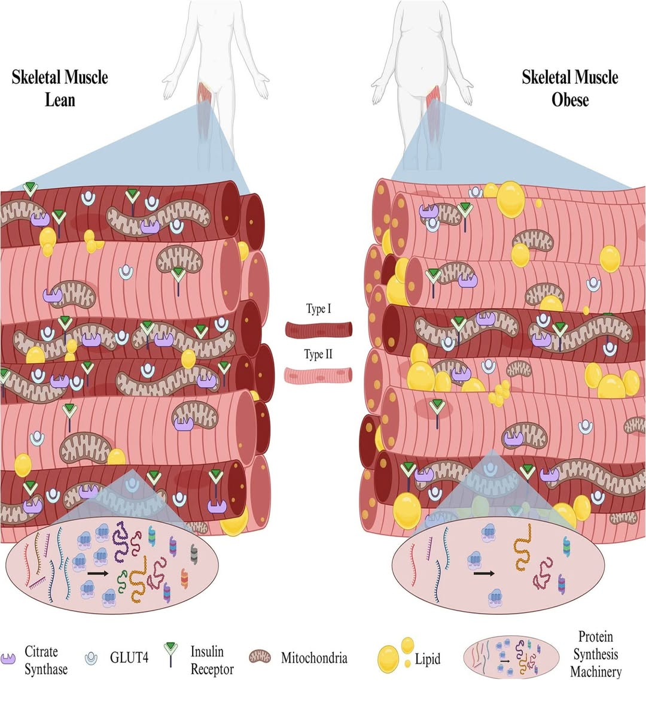

Insulin resistance means the body's cells, especially in muscle, liver and fat, respond poorly to the hormone insulin. The pancreas answers by making more insulin, so blood sugar can stay normal for years while insulin quietly runs high. The group's admins treat it as a central, under-tested driver of heart disease: it clusters with high triglycerides, low HDL, high blood pressure and belly fat, and it can keep plaque growing even when LDL cholesterol has been driven low.
The practical message that runs through the posts is that insulin resistance is detectable early and is usually reversible. Louis Nervegna and Gokhan Can emphasize fat accumulating in the liver and muscle as the most likely root cause, and they argue that substantial weight loss is the most reliable remedy, with diet quality, exercise and sometimes drugs as supporting tools. Several of their claims are strong opinions, and these are flagged as such below.
What insulin resistance is, and why blood sugar hides it
Louis shares an analysis built on a 1988 lecture by Gerald Reaven: as muscle, liver and fat lose insulin sensitivity, the pancreas produces more insulin, glucose stays normal, the patient feels fine, and standard screening reads "normal"1. A video summary by Gokhan makes the same point, saying the body can hold blood sugar normal for 10 to 15 years by overproducing insulin5.
The Whitehall II study followed 6,538 British civil servants and reconstructed 13-year trajectories for the 505 who developed type 2 diabetes. HOMA insulin sensitivity was already about 34% lower in those people throughout, with a steeper decline from five years before diagnosis. Fasting glucose rose steadily from 13 to 3 years before diagnosis and then accelerated. Beta-cell function (the pancreas's insulin-making capacity) ran higher than in controls, peaked at 92.6% four to three years before diagnosis, then fell to 62.4% at diagnosis1.

That last point matters. Louis stresses that insulin resistance alone does not cause type 2 diabetes: diabetes needs resistance plus failing beta cells, because a healthy pancreas can compensate for even severe resistance, and he adds that a true cure has to restore beta-cell function7.
A Cell Metabolism paper from 2026, discussed by Louis, proposes a different framing. It suggests insulin resistance in obesity-related prediabetes and early diabetes may be an adaptive response that limits glucose flowing into vulnerable tissues during chronic nutrient excess. Louis connects this to a point he calls the "dark secret of diabetes care": drugs that only lower glucose, such as sulfonylureas and insulin, have not consistently improved long-term outcomes, whereas metformin, SGLT2 inhibitors and GLP-1 agonists produce benefits beyond glucose lowering8. This is a hypothesis, not a settled view.
Why it matters for the heart
Residual risk beyond LDL
LDL cholesterol-lowering has been enormously successful, yet some people keep progressing. A reshared evidence summary (which Gokhan notes was assembled with ChatGPT) cites a pooled analysis of more than 3,400 coronary patients by Bayturan and colleagues in which over 20% still progressed on treatment with LDL at or below 70 mg/dL, and the progressors had higher baseline glucose and triglycerides9. The same summary reports that metabolic syndrome predicted more plaque progression (+0.51% versus +0.23%, P = .003; adjusted odds ratio 1.25), that the PARADIGM registry found an odds ratio of 1.51 for rapid progression, and that higher HOMA-IR independently predicted new plaque progression over one year in stable angina patients9.
Show data
| Odds ratio | 95% CI | |
|---|---|---|
| Any plaque progression (adjusted) | 1.25 | – |
| Rapid progression, 1% or more a year (PARADIGM registry) | 1.51 | – |
Louis shares an interview with William Cromwell, who the post says is an expert in both metabolic disorders and lipidology, arguing that insulin resistance and LDL/ApoB are both independent causal risk factors, with neither being "the true cause" and both needing treatment610.
Triglycerides, HDL and the lipid fingerprint
Louis explains that the triglyceride-to-HDL ratio works as an indirect marker of insulin sensitivity that tracks visceral and liver fat, and that high triglycerides are also directly atherogenic because VLDL particles carry ApoB10. He argues low HDL is usually a consequence of insulin resistance rather than a cause: raising HDL with drugs (torcetrapib, dalcetrapib, evacetrapib) failed to cut cardiovascular events, so in his view HDL itself is not causal while insulin resistance is11. That is his interpretation of those trials. He also highlights a 2024 study in which small HDL particles were associated with prediabetes, diabetes and coronary calcium, and lipid-lowering drugs may offset up to 40% of the calcification linked to high small HDL; the study is cross-sectional, and the conclusion that most insulin-resistant people should consider a statin is Louis's reading12.
Insulin and cholesterol production
Louis also notes that insulin signals the liver to make cholesterol, citing a Mass General Brigham explainer and a cardiologist quoted there, which is one reason insulin-resistant people tend to have high LDL1314. He extends this to argue that animal protein raises insulin, partly offset by glucagon, and that swapping to plant protein can lower cholesterol beyond saturated fat and fiber effects; the post's own summary flags much of the protein argument as his inference13.
Insulin and ageing
Louis shares a mouse study in which reducing insulin signaling in B cells raised median lifespan by about 36%15, and a Luigi Fontana post saying chronically elevated insulin keeps the insulin/IGF-1-AKT-mTOR network active, linked to growth, ageing biology and cancer pathways16. These are animal and mechanistic findings. Gokhan separately summarizes a video on immunoglobulin G building up in fat tissue and impairing insulin signaling in mice, noting it is exciting only "if it holds up"17.
Detecting it early
Blood tests
- Fasting insulin and a 2-hour oral glucose tolerance test (OGTT) with insulin at 30, 60, 90 and 120 minutes are named by Louis as the earliest-catching tests1.
- HOMA-IR is a calculation from fasting glucose and fasting insulin. A video Gokhan summarizes gives under 1.0 as ideal, over 2.0 as insulin resistance and over 3.0 as frank resistance; it also suggests keeping HbA1c under 5.7% and treating a slow upward creep as a warning sign5.
- Insulin levels themselves. Louis calls elevated fasting or 2-hour insulin the "canary in the coal mine"18. The shared summary says most labs call fasting insulin under 10 µU/mL normal, while truly healthy people sit around 2 to 3, and 2-hour insulin should be under 1718. Treat those cut-offs as one source's claim and discuss them with your doctor.
- Gokhan's own baseline panel includes fasting glucose, HbA1c, fasting insulin and calculated HOMA-IR, plus ApoB, Lp(a) and hs-CRP, and notes some people get an OGTT instead of fasting insulin19. The video summary suggests ApoB ideally under 100 mg/dL (under 80 for high risk) and Lp(a) generally under 75 nmol/L, tested once5.
Simple body and lipid markers
Metabolic syndrome means at least 3 of 5: blood pressure 130/85 or higher, fasting glucose 100 mg/dL or higher, HDL under 40 (men) or 50 (women), triglycerides 150 or higher, and a large waist (over 102 cm for men, 88 cm for women)20. Louis shares a Christos Mantzoros clip naming waist-to-height ratio (a visceral fat proxy), adiponectin and TG/HDL as simple metabolic-health measures21. A study shared via Louis applying the Lancet's updated obesity definition to over 250,000 people found 11% of people with normal BMI had clinical obesity18.
Liver fat
A Yale report shared by Louis says liver fat above 1.85% was linked to insulin resistance in a study of 2,331 mostly young, lean, healthy people, well below the roughly 5% threshold for diagnosing fatty liver; Louis says lean people can carry enough liver fat to cause insulin resistance without knowing it2. Louis reports his own liver fat is under 1% on elastography (Fibroscan) with an A1C of 4.722.
What drives insulin resistance
Fat in the wrong places. Louis relays a Harvard diabetologist's explanation that in most people the biggest driver is fat stored in the liver, that losing it by any means dramatically improves resistance, and that visible abdominal (visceral) fat is a simple proxy2324. He says a growing consensus among diabetes researchers points to fat inside muscle and liver, with calorie overconsumption the main cause and food type affecting how easily it accumulates25. He argues elevated fasting insulin mostly reflects liver insulin resistance26, and that the process starts in muscle, with the liver later27; the Yale post says the same, quoting Kitt Petersen that ectopic fat builds first in muscle and in some people then in the liver2. Louis adds that "skinny fat" people with normal BMI can carry significant visceral fat, and that Asians develop resistance at lower fat levels28.

Food quality. Louis says refined starch and sugar-sweetened drinks raise the odds of liver fat, though any diet with excess calories can cause it23. For vegans with insulin resistance he again points to liver fat, advises whole grains eaten intact, fruit in whole or blended form and a plant-based Mediterranean pattern, and cautions against white potatoes, which he prefers to swap for sweet potatoes; a Harvard trial on white potatoes and endothelial function is mentioned but its results are not given29.
Other proposals with weaker support. The pack also contains early or animal findings: ceramide accumulation blocking insulin signaling (Louis shared a ceramide post and a Gemini AI fact-check that corrected overstatements)30; clearing senescent vascular cells improved insulin resistance in mice31; and microplastics caused insulin resistance and liver disease in mice, from which Gokhan draws a stronger opinion that obesity theories based on calories and sugar should be re-evaluated32. That sits in tension with Louis's calorie-excess explanation. A fecal transplant trial summary (124 adults with type 2 diabetes) reported better HOMA-IR; the post notes its details could not be verified33. Gokhan himself writes that insulin resistance is probably multifactorial31.
How the group says to reverse it
Weight loss and the Roy Taylor trials
Louis repeatedly cites Roy Taylor's randomized trials: a roughly 700 kcal liquid diet with normal macronutrient proportions plus unlimited non-starchy vegetables for about 8 weeks cleared liver fat within a couple of weeks and pancreatic fat in about 8 weeks, with average weight loss of about 15 kg (33 lb), then a traditional Mediterranean diet for maintenance; remission lasted as long as visceral fat stayed low3. He says the amount needed varies by person and, in practice, about 30 lb is a rough guide, and that low-carb diets without weight loss may just mask the problem28. His corollary is that almost any diet achieving about 30 lb of loss will cut liver fat, which is why he attributes keto, carnivore or vegan "cures" mainly to weight loss; he cites a professor's "Twinkie diet" (27 lb lost in 10 weeks under 1,800 kcal a day) as an illustration, though that was a single anecdote34. The Yale post similarly quotes Petersen describing diabetes patients on about 1,200 kcal a day who lost about 10% of body weight over 8 to 12 weeks, after which liver fat, insulin resistance and diabetes resolved2. Louis also shares a personal account of an A1C falling from 10.7 to 5.5 in about four months, which he praises but which is an anecdote35.
Louis suggests supplements and drugs such as the newer GLP-1 drugs can help if needed3. He notes fat leaves the liver early on a diet, which is why GLP-1 drugs work well in fatty liver, citing the ESSENCE semaglutide trial (72-week interim: MASH inflammation resolved in 63% versus 34%, fibrosis improved in 37% versus 22%, weight loss 10.5% versus 2%)36.
Show data
| Semaglutide | Placebo | |
|---|---|---|
| MASH inflammation resolved | 63% | 34% |
| Fibrosis improved | 37% | 22% |
| Body weight lost | 10.5% | 2% |
Caloric restriction itself is described as one of the most powerful ways to improve insulin sensitivity; in the 2-year CALERIE trial of non-obese, metabolically healthy adults, restriction raised high-molecular-weight adiponectin and reduced circulating ceramides16. Louis also argues the evidence mostly supports Ramadan fasting as safe and improving insulin resistance markers, which he sees as unsurprising calorie restriction37.
Which fats help
Louis summarizes a 2016 PLoS Medicine meta-analysis of randomized feeding trials (102 trials) concluding that polyunsaturated fat (mostly omega-6 from vegetable oils) lowered fasting glucose and A1C and improved HOMA-IR and insulin secretion, monounsaturated fat did well but less so, and saturated fat showed no appreciable benefit3839. Gokhan's numeric summary of five-percent energy swaps reports carbohydrate-to-MUFA lowering HbA1c by 0.09% and HOMA-IR by 2.4%, carbohydrate-to-PUFA lowering HbA1c by 0.11% and fasting insulin by 1.6 pmol/L, and PUFA uniquely improving insulin secretion capacity40. Louis adds a pooled analysis of 39,740 adults in 20 cohorts where those in the top fifth of blood omega-6 had 43% lower diabetes risk41, and a cross-sectional study (1,894 people) linking higher linoleic acid to lower glucose, insulin and HOMA-IR, which cannot show causation42.
A 12-week randomized trial in 110 people with fatty liver found that swapping ghee for the same amount of rapeseed (canola) oil reduced steatosis (P < 0.001), HOMA-IR by 0.9 and triglycerides by 39.7 mg/dL versus controls; Louis frames it as calorie-neutral4344. The reported results also show weight fell 4.3 kg, so the fat swap and weight loss are hard to separate43. These are Louis's emphasis, and readers following other dietary camps may weigh the seed-oil debate differently.
Keto, carbohydrate and the CGM question
Gokhan describes himself as pro-keto for stretches of 3 to 12 months and says carbohydrate-restricted ketogenic diets lower fasting insulin and HOMA-IR45. Louis counters that a keto diet temporarily makes skeletal muscle insulin resistant to preserve glucose, which is why a glucose tolerance test on keto looks poor, and he says the effect is much bigger than that of statins and reverses when the diet stops46. He also argues continuous glucose monitors (CGMs) are a poor guide for most people because they can lead healthy-food avoidance while liver fat, the underlying issue, goes unaddressed; he suggests a Fibroscan is a better use of money22. That is a contested opinion rather than a trial finding.
Supplements and small habits
- Taurine. A 2024 meta-analysis of trials (0.5 to 6 g/day) found lower systolic pressure (-4 mmHg), triglycerides, glucose (-5.9 mg/dL), HOMA-IR (-0.69) and fasting insulin (-1.5 mU/L), with modest effects47. A 120-person trial of 3 g/day with a low-calorie diet in type 2 diabetes lowered insulin and HOMA-IR but not HbA1c or fasting glucose48. A 9-trial analysis in overweight or obese adults found HOMA-IR and HbA1c improved only in obesity49.
- Vitamin K. A Life Extension summary (a supplement-industry magazine) describes three MK-7 trials in type 2 diabetes (90 to 360 mcg/day for 3 to 6 months) lowering fasting glucose and HbA1c, one cutting fasting insulin 28.3%50; a 2023 meta-analysis reported effects on fasting glucose and HOMA-IR51. Louis takes it mainly for insulin sensitivity52.
- Coffee compounds are proposed to activate PPAR-gamma; the source is a popular science page, not a trial53.
- Calf raises after meals are claimed to blunt glucose spikes by up to 52%; the shared post cites no formal study details54.
Drugs, statins and insulin
Louis shares evidence that statins slightly reduce insulin sensitivity, but argues benefits outweigh this12. Gokhan's review summarizes JUPITER, where rosuvastatin cut major cardiovascular events by 44% but raised diabetes diagnoses 26 to 27%, and a meta-analysis of 13 trials (over 91,000 people) with 9% higher relative risk. Intensive atorvastatin carried about 12% higher risk than moderate dosing, about 255 patients must be treated for four years to cause one extra case versus 5 to 9 events prevented, the risk concentrates in people with impaired fasting glucose, obesity, metabolic syndrome or HbA1c above 6%, and it is negligible with normal markers; the review also proposes ezetimibe, PCSK9 inhibitors and pitavastatin to limit glycemic harm4.
Gokhan personally reports fasting insulin rising from about 14 to 21 uIU/mL on rosuvastatin, which prompted him to ask his cardiologist about pitavastatin and a PCSK9 inhibitor5556; this is anecdotal. The Bale-Doneen protocol Gokhan summarizes uses metformin or pioglitazone for newly diagnosed insulin resistance, and in a community cohort reported a 52.7% fall in maximum carotid IMT at two years, though it combined many treatments without a control group57. Ford Brewer's account of cutting his "artery age" lists insulin resistance among his contributors and carb reduction among his changes58.
What this means for you
- Consider asking your doctor about fasting insulin and HOMA-IR, or an OGTT with insulin, rather than relying on glucose and A1C alone15.
- Track waist-to-height ratio and TG/HDL as cheap trends, and check for metabolic syndrome criteria2021.
- The admins view losing visceral and liver fat as the main lever; roughly 15 kg or 30 lb was the average in Taylor's trials328.
- Replacing saturated with unsaturated fat and cutting refined starch and sugar are the dietary swaps the admins emphasize2338.
- Treat insulin resistance and LDL as separate problems that both need managing6.
- If you take a statin and have metabolic risk factors, the group's review suggests monitoring glycemic markers and discussing options rather than stopping4.
Frequently asked questions
Can I have insulin resistance with a normal A1C?
Yes. Whitehall II showed insulin sensitivity was already lower 13 years before diagnosis while glucose rose later1.
Do I need to be overweight to have it?
No. Louis says lean people can have enough liver fat to cause it, and the Yale post found associations at liver fat as low as 1.85%228.
Is low-carb enough?
Louis says cutting carbs without enough weight loss may mask the problem, while Gokhan reports good HOMA-IR results on keto; the posts disagree on emphasis2845.
Does insulin resistance cause diabetes by itself?
Louis says no: failing beta cells are also needed7.
Should I stop my statin if my insulin or glucose rises?
The group's review says the cardiovascular benefit clearly outweighs the modest diabetes risk, and suggests discussing alternatives with a cardiologist4.